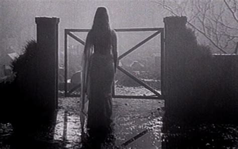

In the southern parts of India, people have their own urban legends and beliefs regarding the supernatural. As with all things ghoulish, some creatures are friendly and harmless, while others are most definitely trying to do terrible things to your body and soul. One of these much-feared creatures is the Mohini, a female ghost that viciously attacks couples. It haunts old wells, coconut trees, and forests in South India. Forests? Understandable, they're creepy and absolutely terrifying at night. Old wells are possible, albeit slightly less so. They are deep and cavernous. But coconut trees? Coconut trees are the most chill things around, why is this witch haunting up the irie vibes?
The Mohini is said to be the spirit of a woman who killed herself without ever knowing love. Embittered and vengeful, she now seeks to destroy the lives of happy couples. Sounds like a few people we know, eh? eh? Jokes aside, some folks are mortally afraid of these things, and they should be. Someone who can tear you limb from limb while chilling in a coconut tree is not to be messed with.
Apart from a homicidal aura and a penchant for coconuts, this demon also has a deadly fragrance that can lull you to your doom, as well as legs made of fire. Yeah, they really went all out with this one. It's like a video game character you max out with all abilities. Like, 'Hey, let's give her flaming toes as well.' Clearly, the Mohini is not someone to be messed with. It makes you wonder if there's a Mohan out there as well. Some forever alone dude who decided he won't let any couple be happy. Maybe these 2 just need to find each other!